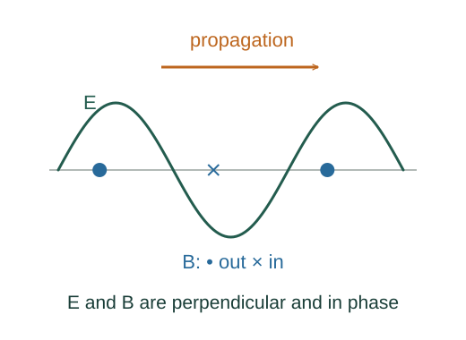

Derive the electromagnetic wave speed from Maxwell’s equations
In empty space, a changing magnetic field curls the electric field, and a changing electric field curls the magnetic field. Combining the two laws yields a wave equation.
What the symbols mean
𝐄, 𝐁: electric and magnetic fields; ∇×: curl; ∇·: divergence; ∇²: componentwise Laplacian.
When this applies
Source-free vacuum region with zero charge and conduction current, sufficiently smooth fields, and vacuum constants μ₀ and ε₀.
Developing the argument

Write the two curl laws in vacuum
Faraday’s law couples electric circulation to changing magnetic field. The Maxwell–Ampère law couples magnetic circulation to changing electric field.
A closer lookWhy is the electric-field derivative present? ↗Take the curl once more
Apply curl to Faraday’s law and interchange spatial and time differentiation. Substitute the other curl equation.
Use a vector identity and zero charge
The identity curl curl 𝐄 = grad div 𝐄 − ∇²𝐄 simplifies because Gauss’s law in this vacuum region gives div 𝐄 = 0.
Compare coefficients with a wave equation
A wave of speed v satisfies ∇²𝐄 = (1/v²)∂²𝐄/∂t². Matching the coefficient predicts the propagation speed. The magnetic field obeys the same wave equation.
A worked example
The vacuum wave speed is c = 299792458 m/s. A plane solution has mutually perpendicular 𝐄, 𝐁 and propagation directions.
Derivation behind this calculation ↗A point to keep straight
This source-free derivation does not say electromagnetic waves require a material medium. Matter changes the constitutive relations and propagation behaviour.
Check the assumptions and derivation ↗